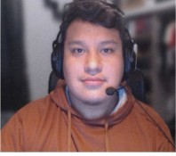
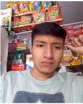
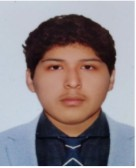
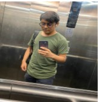

Luis Sebastian Malca Ortiz
Estudio ingenieria de sistemas de información en la UPC, soy una persona responsable, además, me gusta viajar y conocer las distintas culturas del mundo. También me gustan las computadoras, por ello, me llamó la atención programar.
Patrick Fernando Villegas Rojas
Estudió la carrera de ingeniería de sistemas de información en la UPC, soy un alumno comprometido a trabajar en equipo y responsable, me gustan los videojuegos y escuchar música.

Zidane Cesar Ayala Majino
Estudió la carrera de ingeniería de sistema de información que consiste en el desarrollo e implementación del sistema de información que contribuya en la toma de decisiones. Soy un alumno comprometido a trabajar en grupo. Me gusta el fútbol, los videojuegos y viajar.

Gerardo Valentin Palacin Lazo
Estudiante de ingeniería de software de la UPC. Me caracterizo por siempre querer saber más de una forma de hacer las cosas, además de ser algo curioso y empezar a indagar a fondo para comprender mejor qué persona quiero formar en mí en el futuro lejano.

Fabricio Adrian Flores Fierro
Etudiante de cuarto ciclo de la carrera de ingeniería de software, me gusta el trabajo en equipo y participar activamente. Soy de ponerle empeño a los trabajos que realizó para entregar un trabajo presentable.

 Papay
Papay